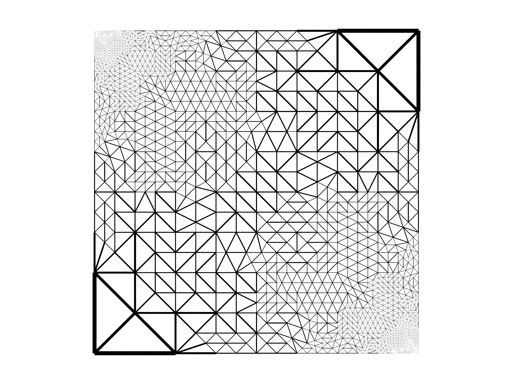
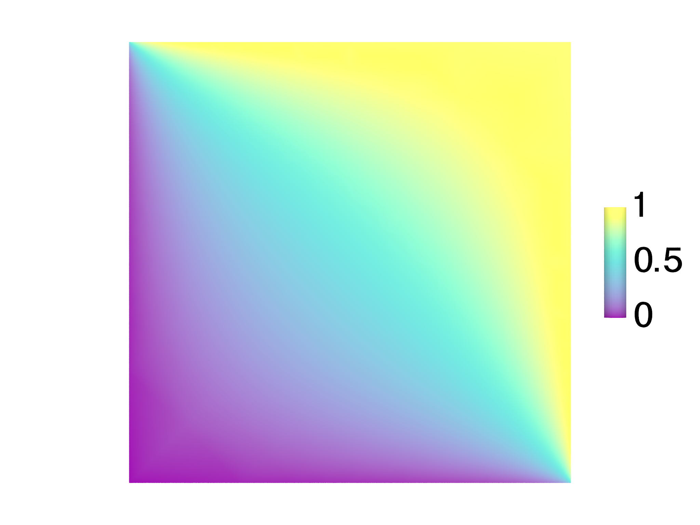

Electrostatics
This example shows how to solve a simple electrostatics problem with adaptive refinement, and provides a useful example of how to cast a problem that is normally thought of as solving a PDE as an optimization problem.
Suppose we want to solve Laplace's equation,
$$\nabla^{2}\phi=0$$
on a square domain \(C\) defined by \(-L/2\leq x\leq L/2\) and \(-L/2\leq y\leq L/2\). An equivalent formulation suitable for morpho is to minimize,
$$ \begin{equation} \int_{C}\left|\nabla\phi\right|^{2}dA \label{eq:el1} \end{equation} $$
with respect to \(\phi\).
We can show the two are equivalent by applying calculus of variations to the \eqref{eq:el1},
$$ \delta\int*{C}\left|\nabla\phi\right|^{2}dA =\int*{C}\delta\left|\nabla\phi\right|^{2}dA $$ $$ =\int_{C}\frac{\partial}{\partial\nabla\phi}\left|\nabla\phi\right|^{2}\cdot\delta\nabla\phi dA,$$
and integrating by parts,
$$ \begin{align} \int_{C}\frac{\partial}{\partial\nabla\phi}\left|\nabla\phi\right|^{2}\cdot\delta\nabla\phi dA & =\int_{\partial C}\nabla\phi\cdot\hat{\mathbf{s}}\delta\phi dl-\int_{C}\nabla\cdot\frac{\partial}{\partial\nabla\phi}\left|\nabla\phi\right|^{2}\delta\phi dA\nonumber \\ & =\int_{\partial C}\nabla\phi\cdot\hat{\mathbf{s}}\delta\phi dl-\int_{C}\nabla^{2}\phi\delta\phi dA,\label{eq:bulkvariations} \end{align} $$
Note If you're not familiar with calculus of variations, feel free to skip paragraphs that refer to "variations". The calculus of variations generalizes calculus from differentiating with respect to variables to differentiating with respect to functions.
where \(\hat{\mathbf{s}}\) is the outward normal. Hence, allowing for arbitrary variations \(\delta\phi\), in order for the bulk integrand to vanish Laplace's equation \(\nabla^{2}\phi=0\) must be satisfied. Similarly requiring the boundary integrand to vanish yields the "natural" boundary condition \(\nabla\phi\cdot\hat{\mathbf{s}}=0\), known as the Neumann boundary condition. In the absence of boundary energies, solving \(\nabla^{2}\phi=0\) in \(C\) subject to \(\nabla\phi\cdot\hat{\mathbf{s}}=0\) on \(\partial C\) yields the family of uniform constant solutions \(\phi=\text{const}.\)
To impose boundary data, we will supplement \eqref{eq:el1} with the additional functional,
$$ \begin{equation} \lambda\int_{\partial C}\left[\phi-\phi_{0}(\mathbf{x})\right]^{2}dl\label{eq:anchoring} \end{equation} $$
where the function \(\phi_{0}\) represents some imposed boundary potential. Taking variations of this functional,
$$ \begin{align} \delta\lambda\int_{\partial C}\left[\phi-\phi_{0}(\mathbf{x})\right]^{2}dl & =\lambda\int_{\partial C}\frac{\partial}{\partial\phi}\left[\phi-\phi_{0}(\mathbf{x})\right]^{2}\delta\phi dl\nonumber \\ & =\lambda\int_{\partial C}2\left[\phi-\phi_{0}(\mathbf{x})\right]\delta\phi dl\label{eq:boundary} \end{align} $$
Collecting the boundary terms from \eqref{eq:bulkvariations} and \eqref{eq:boundary}, we obtain the equivalent boundary condition on \(\phi\), $$\nabla\phi\cdot\hat{\mathbf{s}}+2\lambda(\phi-\phi_{0})=0,$$ which is known as a Robin boundary condition. As \(\lambda\to\infty\), \(\phi\to\phi_0\) on the boundary, recovering a fixed boundary or Dirichlet condition, while as \(\lambda\to0\), we recover the Neumann conditions discussed earlier.
In the example, we will set \(\phi_0=0\) on the left and lower boundary and \(\phi_0=1\) on the right and upper boundary, and use \(\lambda=100\).
The code illustrates a few morpho tricks. First, the following code is used to select the left/bottom and upper/right sides of the mesh:
var bnd = Selection(mesh, boundary=true)
var bnd1 = Selection(mesh, fn (x,y,z) abs(x+L/2)<0.01 || abs(y+L/2)<0.01)
var bnd2 = Selection(mesh, fn (x,y,z) abs(x-L/2)<0.01 || abs(y-L/2)<0.01)
for (b in [bnd1, bnd2]) b.addgrade(1)
bnd1=bnd.intersection(bnd1)
bnd2=bnd.intersection(bnd2)
What's happening here is that we select the whole boundary in the first
line and then select relevant vertices in the next two lines. The edges
are then added to the selection with addgrade, but this also selects
some interior edges. To ensure we only have boundary edges in our
selections, we find the intersection of bnd1 and bnd, and similarly
for bnd2.
The problem setup involves adding the electrostatic energy Eq.\eqref{eq:el1} using
GradSq and the boundary terms Eq.\eqref{eq:anchoring} as LineIntegrals.
var problem = OptimizationProblem(mesh)
var le = GradSq(phi)
problem.addenergy(le)
var v1 = 0, v2 = 1
var lt1 = LineIntegral(fn (x, v) (v-v1)^2, phi)
problem.addenergy(lt1, selection=bnd1, prefactor=100)
var lt2 = LineIntegral(fn (x, v) (v-v2)^2, phi)
problem.addenergy(lt2, selection=bnd2, prefactor=100)
Optimization is done with a FieldOptimizer:
var opt = FieldOptimizer(problem, phi)
opt.conjugategradient(100)
The problem as posed requires \(\phi\) to very sharply change in the upper left and lower right cornes as the imposed potential changes, but far away from these \(\phi\) changes much more slowly. We would like therefore to perform adaptive refinement, refining the mesh only in places where \(\phi\) is rapidly changing and using coarse elements elsewhere.
To identify elements to refine, we compute the electrostatic energy in each elementwe'll use this as a heuristic measure of how rapidly \(\phi\) is changingand find the mean energy per element. We then create a Selection and manually select elements that have an electrostatic energy more than \(1.5\times\) the mean.
// Select elements that have an above average contribution to the energy
var en = le.integrand(phi) // energy in each element
var mean = en.sum()/en.count() // mean energy per element
var srefine = Selection(mesh)
for (id in 0...en.count()) if (en[0,id]>1.5*mean) srefine[2,id]=true
// identify large contributions
Refinement is then performed with a MeshRefiner object from the
meshtools module, which we create with a list of both the mesh to
refine and all quantities that refer to the mesh:
var ref = MeshRefiner([mesh, phi, bnd, bnd1, bnd2])
The refinement is performed using the selection srefine just created
var refmap = ref.refine(selection=srefine)
which returns a Dictionary mapping the old quantities to the new refined ones. We use this dictionary to update the OptimizationProblem and FieldOptimizer,
for (el in [problem, opt]) el.update(refmap)
and finally update our variables
mesh = refmap[mesh]
phi = refmap[phi]
bnd = refmap[bnd]
bnd1 = refmap[bnd1]
bnd2 = refmap[bnd2]
Finally, we equiangulate the mesh to help avoid narrow elements,
equiangulate(mesh)
Once refinement is complete, further optimization can occur on the newly refined mesh
opt.conjugategradient(1000)
The process of refinement and optimization just described takes place in a loop. The resulting mesh after 10 iterations is shown in Fig. 7.6, together with the solution \(\phi\). The code runs in a few seconds, providing a considerable speedup over optimizing on a fine grid to get comparable accuracy.
